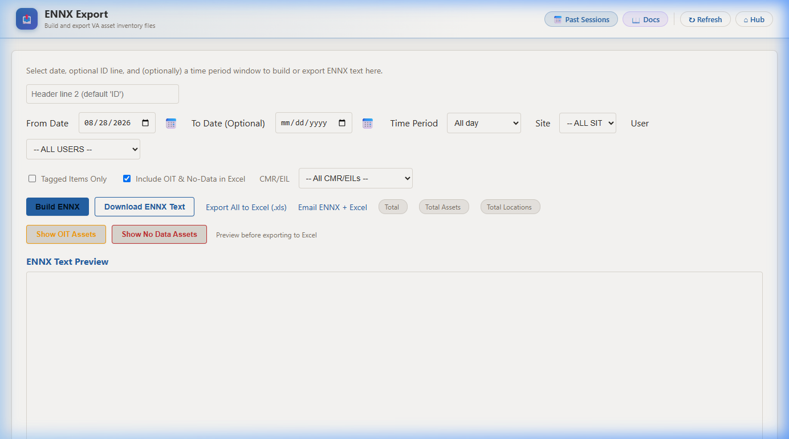
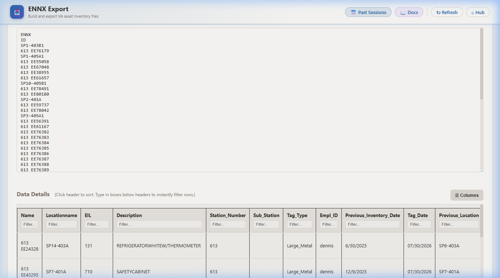
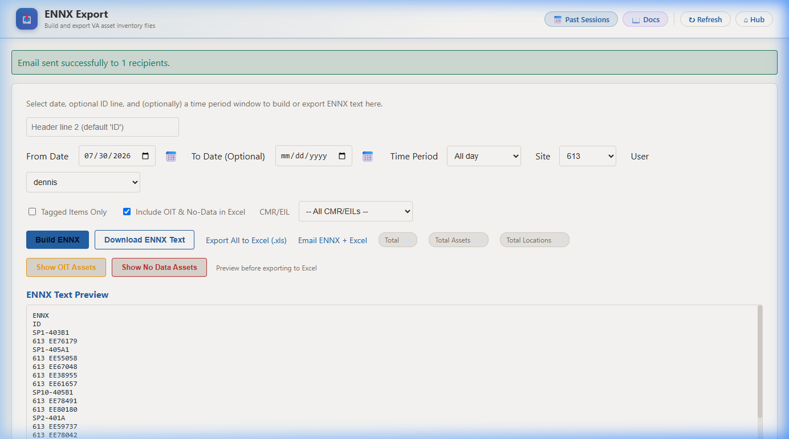
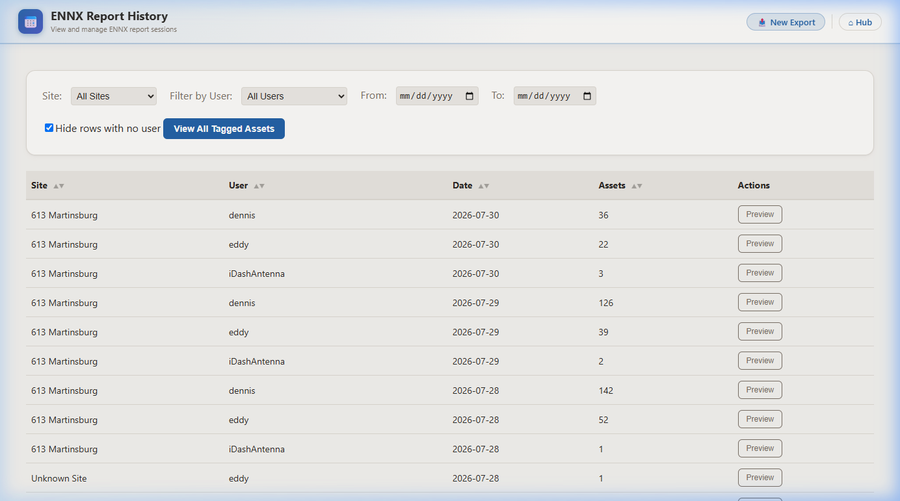
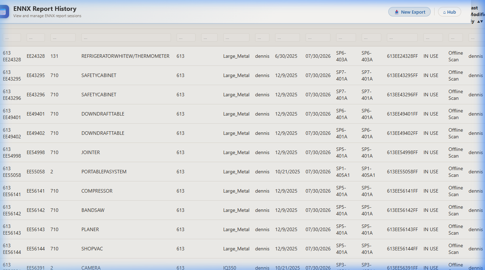
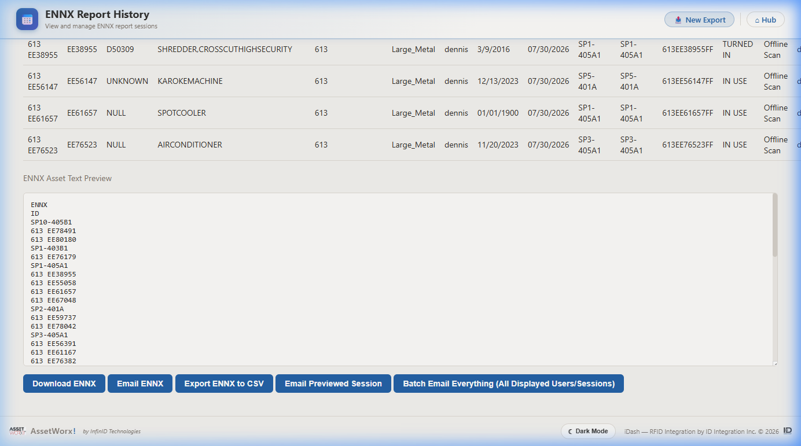

How to build and export ENNX files using the iDash ENNX Export tool, and how to use ENNX Report History to review, preview, and bulk-email past sessions.

The ENNX Export page — set your filters here before clicking Build ENNX.
| Filter | Description |
|---|---|
| Header line 2 | Optional second header in the ENNX text output. Defaults to “ID”. |
| From Date | The date assets were inventoried (scanned). Must match the actual scan date, not when records were modified. |
| To Date (Optional) | End of date range. Leave blank to report on a single day. |
| Time Period | Filter by time of day within the selected date(s). Default: All day. |
| Site | Filter by a specific VA site (e.g., 613 Martinsburg). Leave as -- ALL SITES -- for all sites. |
| User | Filter by the technician who performed the scan. |
| Tagged Items Only | When checked, only includes assets with an RFID tag associated. |
| Include OIT & No-Data in Excel | Includes OIT-owned and unscanned assets in the Excel export. Checked by default. |
| CMR/EIL | Filter results to a specific CMR or EIL equipment list. |
| Button | What It Does |
|---|---|
| Build ENNX | Generates the ENNX report and populates the ENNX Text Preview. Always run this first. |
| Download ENNX Text | Downloads the generated report as a .txt ENNX file to your computer. |
| Export All to Excel (.xls) | Exports the full asset list with ENNX data as an Excel file. |
| Email ENNX + Excel | Sends both the ENNX text file and Excel export to configured site recipients. |
| Total • Total Assets • Total Locations | Summary counters populated after Build ENNX — quick record count sanity check. |
| Show OIT Assets | Displays OIT-owned assets below the preview for review before exporting. |
| Show No Data Assets | Displays assets with no scan data for the selected period — useful for spotting missed equipment. |

After clicking Build ENNX with site 613 data — the ENNX Text Preview populates and the Data Details table appears below for row-level review.

After clicking Email ENNX + Excel — a confirmation banner appears when the email is sent successfully.

ENNX Report History for site 613 Martinsburg — each row is one scanning session. Filter by Site, User, or date range. Click Preview to expand a session.
| Filter / Control | Description |
|---|---|
| Site | Filter the list to a specific VA site number. |
| Filter by User | Show only sessions scanned by a specific technician. |
| From / To | Date range filter for the session list. |
| Hide rows with no user | Filters out automated/system rows with no user. Checked by default. |
| View All Tagged Assets | Opens a cross-session view of all tagged assets in the currently displayed results. |

Preview of a 613 Martinsburg session — shows EE#, description, EIL, user, expected vs. found locations, RFID tag, status, and scan type.
***END***.
All five action buttons at the bottom of ENNX History — the previewed session's ENNX text is shown above them.
| Button | What It Does |
|---|---|
| Download ENNX | Downloads the currently previewed session as a standard ENNX .txt file. Requires a preview to be open first. |
| Email ENNX | Emails the previewed session’s ENNX .txt file to configured site recipients. Requires a preview to be open. |
| Export ENNX to CSV | Exports the previewed session’s asset data as a .csv file — useful for analysis in Excel without ENNX text formatting. |
| Email Previewed Session | Sends a detailed email of the previewed session including both the asset data table and ENNX text to configured recipients. |
| Batch Email Everything (All Displayed Users/Sessions) | Sends one ENNX email per session for every session currently visible in the history list (respecting your Site/User/Date filters). Use this to bulk-deliver all sessions for a date in one click. |
| Issue | Solution |
|---|---|
| “No data found” after Build ENNX | The From Date must match the exact scan date. Open ENNX History to find dates with actual sessions, then use that date on the Export page. |
| ENNX Text Preview is blank after Build | Verify there is scan data for the selected date, site, and user combination. |
| History list shows no rows | Uncheck Hide rows with no user to reveal system-generated rows. Also widen the date range. |
| Preview shows nothing after clicking Preview | Scroll down — the preview loads below the session list, not in a popup. |
| Download / Email buttons do nothing | Click Preview on a session row first. These buttons require an active preview. |
| Batch Email sent too many emails | Apply Site and Date filters to limit displayed sessions before using Batch Email. |